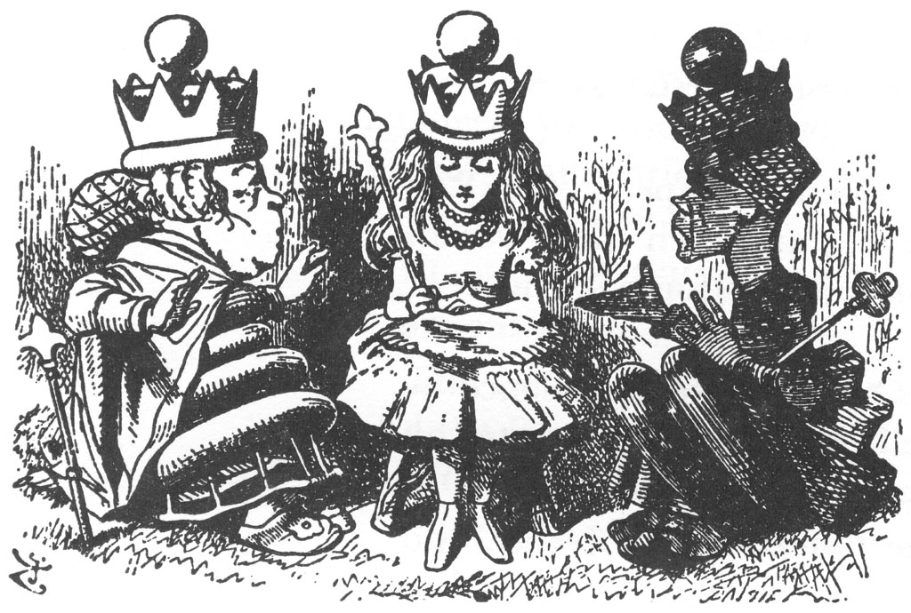
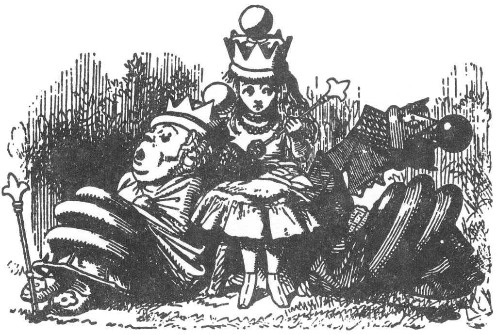
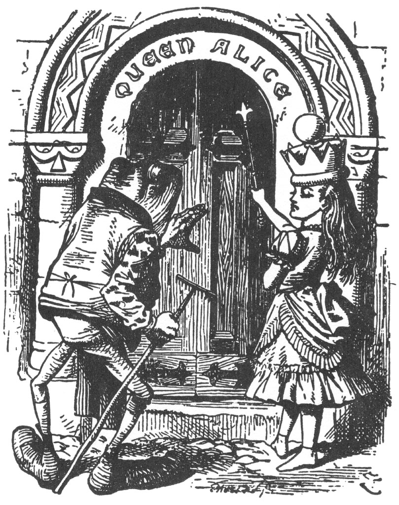
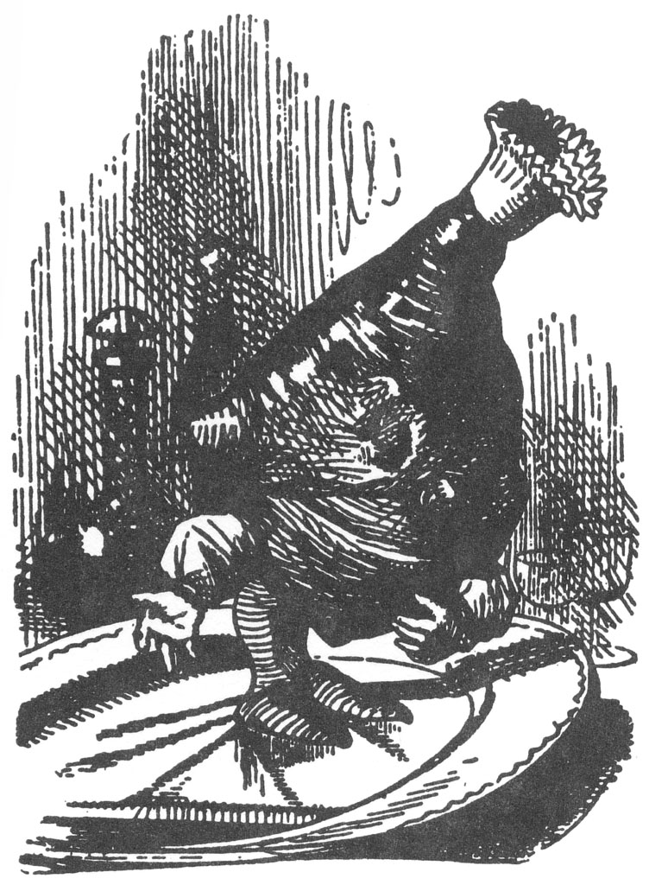
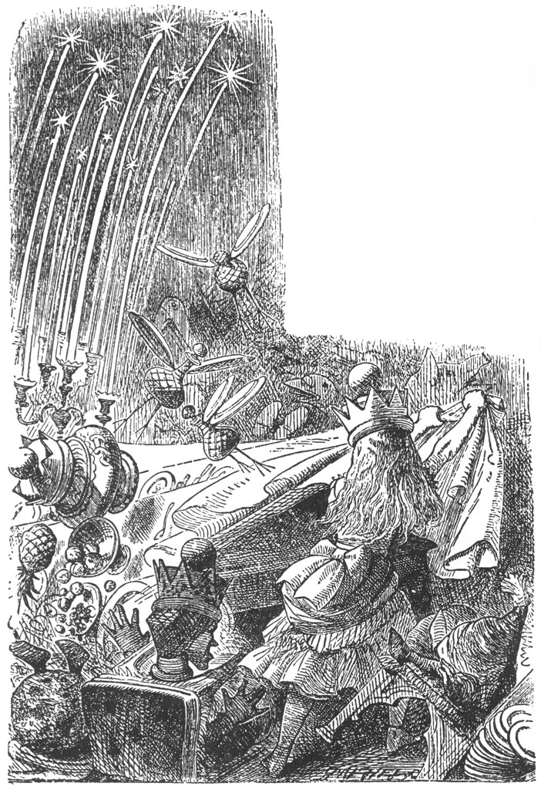

“Olur şey değil doğrusu, bu harika!” dedi Alice. “Bu kadar kısa sürede Kraliçe olabileceğimi hiç ummamıştım... Majesteleri, bunun ne demek olduğunu bakın size söyleyeyim,” diye devam etti, sert bir ses tonuyla (kendisini böyle aşağılamaya pek düşkündü doğrusu), “bir daha çimenlerde böyle yayılmayacaksınız demek! Hani, Kraliçeler ağırbaşlı olmak zorundalar ya!”
Böylece kalkıp gezinmeye başladı... İlk başta, tacının düşebileceği korkusuyla kaskatı yürüdü, ama sonra onu görecek kimse olmadığı düşüncesiyle rahatladı. “Eğer ki gerçekten Kraliçeysem,” dedi tekrar yere oturduğu sırada, “zaman içerisinde tacımı kafamda tutmayı öğrenirim.”
Her şey öylesine tuhaf gelişiyordu ki, her iki yanına oturmuş Beyaz ve Kızıl Kraliçe’yi görmek onu pek şaşırtmamıştı; buraya nasıl geldiklerini onlara sormayı çok istiyordu; ne var ki bunun kibar bir davranış olmayacağını düşündü. Yine de oyunun bitip bitmediğini sormanın zararı olmazdı. “Lütfen, söyler misiniz...” diye sözlerine başladı, ürkek ürkek Kızıl Kraliçe’ye bakarak.
“Seninle konuşulduğunda konuş!” diye sözünü kesti Kızıl Kraliçe sert bir ifadeyle.
“Ama eğer herkes bu kurala uyarsa,” dedi Alice, küçük birtar-tışmaya her an hazır biri olarak “ve sadece size bir şey söylendiğinde cevap verirseniz, karşınızdaki kişi de hep sizin başlamanızı beklerse, bu demek ki, kimse bir şey söyleyemez o zaman...”
“Saçma!” diye bağırdı Kraliçe, “Baksana, görmüyor musun, çocuk...” Tam bu sırada kaşlarını çatarak sustu ve bir dakika düşündükten sonra, birden konuyu değiştirdi. “‘Gerçekten, Kraliçe isem’, sözüyle ne demek istiyorsun sen? Hangi hakla kendini böyle sıfatlandırıyorsun? Biliyorsun ki özel sınavı geçinceye değin, Kraliçe olamazsın. Bu sınava da ne kadar erken başlarsak o kadar iyi.”
“Ben, sadece ‘eğer’, dedim!” diye yalvararak konuştu Alice, acıklı bir ses tonuyla.
İki Kraliçe birbirlerine baktılar, minik bir ürpermeyle Kızıl Kraliçe, “sadece ‘eğer...’ dediğini söylüyor...” dedi.
“Fakat bundan daha fazlasını söyledi!” dedi Beyaz Kraliçe sıkıntıdan ellerini ovuşturarak, “Ah, bundan kat kat fazlasını!”
“Öyleyse söylemişsin demek,” dedi Kızıl Kraliçe, Alice’e. “Her zaman doğruyu söyle... konuşmadan önce düşün... sonra da bunu bir kenara yaz.”
“Kesinlikle öyle demek istememiştim, benim...” diye Alice sözlerine başladı, ama Kızıl Kraliçe sözünü kesti.
“İşte benim yakındığım şey de bu ya! Demek istemiş olman gerekirdi1 Bir şey demek istemeyen bir çocuğun ne faydası var sanıyorsun? Şaka bile bir şey demek istemeli... ve ümit ediyorum ki bir çocuk, bir şakadan çok daha önemlidir. Bunu iki elinle inkâr etmeye kalkışsan da edemezsin.”
“Ellerimle bir şeyleri inkâr etmiyorum,” diye karşı çıktı Alice.
“Kimse inkâr ettiğini söylemedi,” dedi Kızıl Kraliçe. “Kalkışsan da inkâr edemezsin,” dedim.
“Canı bir şeyleri inkar etmek istiyor,” dedi Beyaz Kraliçe, “... yalnızca neyi inkar edeceğini bilmiyor!”
“Berbat, kötü bir huy,” dedi Kızıl Kraliçe; o anda bir iki dakikalık rahatsız edici bir sessizlik oldu.

Kızıl Kraliçe, Beyaz Kraliçe’ye dönüp, “Sizi bu öğleden sonra Alice’in akşam yemeği partisine davet ediyorum,” diyerek sessizliği bozdu.
Beyaz Kraliçe, dermansız bir şekilde gülümsedi ve “Ben de sizi davet ediyorum,” dedi.
“Bir partim olduğundan hiç haberim yoktu,” dedi Alice, “ama eğer olacaksa, sanırım konukları benim davet etmem gerekir.”
“Bunu yapman için sana fırsat tanıdık,” diye belirtti Kızıl Kraliçe: “Ama sanırım, görgüden yana hiç ders almamışsın.”
“Derslerde görgü kuralları öğretilmez,” dedi Alice. “Aritmetik ve bu türden şeyler öğretilir.”
“Toplama yapabilir misin,” diye sordu Beyaz Kraliçe, “bir artı bir artı bir artı bir artı bir artı bir artı bir artı bir artı bir artı bir artı, kaç eder?”
“Bilmiyorum,” dedi Alice. “Sayıyı kaçırdım.”
“Toplama yapamıyor,” diye araya girdi Kızıl Kraliçe. “Çıkarma yapabilir misin? 8’den 9’u çıkar.”
“8’den 9’u çıkaramam, biliyorsun,” diye yanıtladı Alice hazır cevaplılıkla. “Ama...”
“Çıkarma yapamıyor,” dedi Beyaz Kraliçe. “Bölme yapabilir misin? Bir somun ekmeği bıçakla böl... bunun yanıtı ne?”
“Sanırım...” diye söze başlamıştı Alice, fakat Kızıl Kraliçe onun yerine yanıt verdi. “Tabii ki tereyağlı ekmek. Başka bir çıkarmayı deneyelim. Köpekten bir kemiği al. Geriye ne kalır?”
Alice düşündü. “Kemiği köpekten alırsam, o zaman kemik kalmaz... köpek de yerinde kalmaz; gelir beni ısırır... o zaman ben de kalmam, tabii ki!”
“O halde diyorsun ki bir şey kalmaz?” dedi Kızıl Kraliçe.
“Sanırım cevap bu.”
“Her zamanki gibi yanlış,” dedi Kızıl Kraliçe, “köpeğin siniri kalır.”
“Ama, anlamadım nasıl...”
“Bak şimdi!” diye bağırdı Kızıl Kraliçe, “Köpeğin sinirleri ayağa kalkabilir, öyle değil mi?”
“Belki,” dedi Alice ihtiyatla.
“Öyleyse köpek giderse, ayağa kalkan sinirleri orada kalır.”
Alice de olabildiğince ciddiyetle ekledi: “Farklı yönlere de gidebilirler.” Sonra da kendi kendine, “Ne saçma sapan şeyler konuşuyoruz, böyle!” dedi.
“Bu, hiç işlem yapamıyor,” dedi iki Kraliçe aynı anda, üzerine bastıra bastıra.
“Siz yapabiliyor musunuz?” dedi Alice, aniden Beyaz Kraliçe’ye dönerek, çünkü bu kadar çok hatasının bulunmasından hoşnut değildi.
Kraliçe’nin nefesi daralmıştı, gözlerini kapadı. “Toplama yapabilirim,” dedi, “eğer bana zaman verirsen... ama hiçbir koşulda çıkarma yapamam.”
“Tabii ki alfabeni biliyorsundur,” dedi Kızıl Kraliçe.
“Kesinlikle,” dedi Alice.
“Ben de,” diye fısıldadı Beyaz Kraliçe. “Sık sık beraber söyleriz, tatlım. Sana bir sır vereceğim... Ben bir harfin bütün sözcüklerini okuyabilirim. Bu müthiş değil mi? Neyse, cesaretin kırılmasın. Zaman içinde sen de bu noktaya gelirsin.”
Burada, Kızıl Kraliçe yeniden sözü aldı. “Faydalı bilgilerle ilgili soruları yanıtlayabilir misin?” dedi, “Ekmek nasıl yapılır?”
“Bunu biliyorum!” diye atıldı Alice. “Unu alırsınız...”
“Unu nerde toplarsın?” diye sordu Beyaz Kraliçe, “Bahçelerde mi, yoksa çalılıklarda mı?”
“Şey, un toplanmaz ki,” diye açıkladı Alice: “Buğday toplanır. Sonra da alınıp değirmen taşının altında dövülür.”
“Niye? Çok mu kızmış değirmen taşı buğdaya,” dedi Beyaz Kraliçe. “Hiçbir şeyi atlamadan anlatman gerekir.”
“Yelpazeyle şunun başını serinlet!” dedi Kızıl Kraliçe kaygıyla araya girerek. “Bu kadar çok düşünmekten ateşi çıkacak.” Böyle-ce, yaprak demetleriyle Alice’i yelpazeleme işine koyuldular, ta ki saçları oraya buraya uçuşunca Alice, artık bırakmaları için onlara yalvarmak zorunda kalıncaya değin.
“Şimdi, kendine gelecek,” dedi Kızıl Kraliçe. “Yabancı dil bilir misin?”, “Hobidik-gubidiğin Fransızcası ne?”
“Hobidik-gubidik İngilizce değil ki,” dedi Alice ciddi bir şekilde.
“Kim İngilizce olduğunu söyledi ki?” dedi Kızıl Kraliçe.
Alice bu sefer, bu sıkıntıdan kurtulmanın bir yolunu bulduğunu düşündü. “Hobidik-gubidiğin hangi dilde olduğunu söylerseniz bana, ben de size onun Fransızcasını söylerim!” diye bağırdı zafer kazanmışçasına.
Ne ki, Kızıl Kraliçe yerinde dimdik doğrularak “Kraliçeler asla pazarlık yapmaz,” dedi.
“Keşke, Kraliçeler soru da sormasalar,” diye düşündü Alice kendi kendine.
“Tartışmayalım,” dedi Beyaz Kraliçe endişeli bir ses tonuyla. “Şimşeğin nedeni nedir?”
“Şimşeğin nedeni,” diye gayet kararlı bir şekilde söze başladı Alice, çünkü bu sorunun cevabını bildiğinden çok emindi, “gök gürültüsüdür... yo, yo!” diye hemencecik düzeltti kendini. “Tam tersini söylemek istedim.”
“Düzeltmek için çok geç,” dedi Kızıl Kraliçe, “söz bir kez ağızdan çıktı mı, bitmiştir, sonuçlarına katlanacaksın.”
“Gök gürültüsü dedin de aklıma geldi...” dedi Beyaz Kraliçe, yere bakıp, gergin bir şekilde ellerini kenetleyip çözerek, “geçen Salı öyle bir gök gürültülü fırtına vardı ki... yani demek istiyorum ki geçen Salı günü takımlarından birinde!”
“Bizim ülkemizde,” diye belirtti Alice, “bir kerede yanlızca bir gün olur.”
“Bu bir şeyler yapmak için çok zayıf, cılız bir yol. Oysa bizim burada, çoğunlukla bir kerede iki ya da üç gece ve gündüz olur, kışları bazen beş geceyi birlikte yaşarız... ısınmak için hani.”
“O halde, beş gece bir geceden daha mı sıcaktır?” diye sormaya kalkıştı Alice.
“Beş kat daha sıcak tabii ki.”
“Fakat aynı kuralla gidersek, beş kat da daha soğuk olmalı.”
“Öyle işte!” diye bağırdı Kızıl Kraliçe.
“Beş kat sıcak ve beş kat da soğuk... tıpkı benim senden beş kat zengin ve beş kat zeki olmam gibi!”
Alice içini çekti ve uğraşmaktan vazgeçti, “Cevapsız bir bilmece gibi,” diye düşündü.
“Yumurta Adam da görmüştü,” diye devam etti Beyaz Kraliçe kısık bir sesle, daha çok kendi kendine konuşur gibi. “Elinde bir tirbuşonla kapıya geldi...”
“Niçin?” dedi Kızıl Kraliçe.
“İçeri gireceğini söyledi,” diye devam etti Beyaz Kraliçe, “bir suaygırı arıyormuş... O sabah da, aksi gibi evde böyle bir şey yoktu.”
“Genelde olur mu?” diye sordu Alice afallamış bir halde.
“Şey, sadece Perşembelerde olur.”
“Neden geldiğini biliyorum,” dedi Alice. “Balığı cezalandırmak istiyordu, çünkü...”
Beyaz Kraliçe tekrar sözü aldı. “Öyle bir fırtına koptu ki, aklın almaz!” (“Bu Kraliçe’nin de aklı hiç almaz, hani,” dedi Kızıl Kraliçe.) “Çatının bir kısmını yerinden söktü, içeriye o kadar çok gök gürlemesi girdi ki... kocaman topaklar halinde odada yuvarlanıp durdular... masaları ve diğer eşyaları yere devirdiler... ta ki korkumdan kendi adımı unutuncaya değin!”
“Böyle bir kazanın ortasında hiç adımı hatırlamaya çalışmam doğrusu! Bunun ne yararı olabilir ki?” diye aklından geçirdi Alice. Ne var ki, zavallı Kraliçe’nin duygularını incitirim korkusuyla, bunu yüksek sesle dile getirmedi.
“Majesteleri onu mazur görsünler,” dedi Kızıl Kraliçe Alice’e, Beyaz Kraliçe’nin ellerinden birini elinin içine alıp usulca okşayarak. “Genel olarak, iyi niyetlidir, fakat budalaca şeyler söylemeden edemez.”
Beyaz Kraliçe ürkerek kendisine bakarken Alice kibarca bir şeyler söylemesi gerektiğini düşündü, fakat aklına hiçbir şey gelmiyordu.
“Hiç de iyi yetiştirilmediği bir gerçek,” diye devam etti Kızıl Kraliçe. “Ama böyle iyi huylu birisi olması ne kadar da şaşırtıcı! Başını okşa da nasıl da mutlu olduğunu gör!” Ne var ki, bu Alice’in cesaret edip de yapabileceği bir şey değildi doğrusu.
“Birazcık sevecenlik... saçlarını sarmak... onda ne mucizeler yaratacaktır...”
Beyaz Kraliçe, derinden bir iç çekti ve başını Alice’in omzuna koydu, “Öyle uykum geldi ki!” diye inledi.
“Yoruldu, zavallı şey!” dedi Kızıl Kraliçe. “Saçlarını düzelt... gece başlığını ona ver... sonra da sakinleştirecek bir ninni söyle ona.”
“Yanımda gece başlığı yok,” dedi Alice, ilk talimatı yerine getirmeye uğraştığı sırada, “onu sakinleştirecek bir ninni de hiç bilmiyorum.”
“O zaman bunu kendi başıma yapmalıyım,” dedi Kızıl Kraliçe ve başladı ninni söylemeye:
Uyu uyu Kraliçem, kucağında Alice’in!
Şekerleme yapadur sen şölene değin;
Baloya da gidelim şölen bittiğinde
Kızıl Kraliçe, Beyaz Kraliçe, Alice hep birlikte!
“İşte şimdi sözlerini biliyorsun,” diye ekledi, kafasını Alice’in diğer omzuna koyduğu sırada, “sadece bunu bana da söyle. Benim de uykum geliyor.” Derken, iki Kraliçe de derin uykuya dalıp, horlamaya başladılar.

“Şimdi ben ne yapacağım?” diye haykırdı Alice, önce bir yuvarlak kafanın, ardından diğerinin omuzlarından yuvarlanıp, külçe halinde kucağında yatışlarını hayretler içinde seyrederken. “Bir anda uykuya geçen iki Kraliçe ile daha önce hiç kimsenin ilgilenmek zorunda kaldığını hiç sanmıyorum! Hayır, İngiltere Tarihinde böyle bir şey asla olmamıştır... Olamaz, çünkü işin doğrusu bir anda birden fazla Kraliçe olmaz. Kalkın, hantal şeyler!” diye devam etti sabırsız bir ses tonuyla; ne var ki kibar bir horlama dışında hiçbir karşılık alamadı.
Horlama gittikçe daha bir belirginleşiyor, tıpkı bir melodiye dönüşüyordu; nihayet ne söylediklerini bile seçmeye başlamış, tam büyük bir hevesle onları dinlemeye koyulmuştu ki, nasıl olduğunu anlamadan iki kocaman kafa birden kucağından kayboldu.
Kemerli bir kapının önünde duruyordu, üzerinde büyük harflerle KRALİÇE ALİCE yazılıydı, kapının her iki yanında birer tokmak vardı: Birinde “Konuk Tokmağı”, diğerinde “Uşak Tokmağı” yazılıydı.
“Şarkı bitene kadar bekleyeyim,” diye aklından geçirdi Alice, “sonra da... tokmakla... ama hangi tokmakla vuracağım?” diye devam etti, kafası oldukça karışmıştı. “Konuk değilim, uşak değilim. Üzerinde “Kraliçe” yazılı başka bir tokmak daha olmalıydı, hani...”
Tam o anda kapı birazcık aralandı ve uzun gagalı bir yaratık bir an başını dışarıya uzatıp, “İki hafta sonrasına kadar giriş yok!” dedi ve güm diye kapıyı yüzüne kapadı.

Alice uzun bir süre boşu boşuna kapıyı vurdu, tokmağı çaldı, nihayet bir ağacın altında oturan çok yaşlı bir Kurbağa ayağa kalktı ve ağır ağır, aksayarak Alice’e doğru geldi; parlak sarı kıyafetler giymişti ve ayağında kocaman çizmeler vardı,
“Şimdi ne oldu?” dedi Kurbağa derin boğuk bir fısıltıyla.
Alice, binlerinde her an kusur bulmaya hazır bir şekilde arka-lice sini döndü. “Kapıya bakacak hizmetçi nerede?” diye söze başladı,
“Hangi kapıya?” dedi Kurbağa.
Alice, Kurbağa’nın ağır ağır konuşmasına öyle sinirlenmişti ki neredeyse ayaklarını yere vuracaktı. “Bu kapıya, tabii ki!”
Kurbağa kocaman donuk gözleriyle kapıya bir dakika öylece baktı: sonra da yaklaşıp, sanki boyasının dökülüp dökülmediğini anlamak istercesine, başparmağını kapıya sürttü; ardından da dönüp Alice’e baktı.
“Kapıya bakmak mı? Ne istenmiş oluyor?” Öylesine boğuk konuşuyordu ki, Alice onu neredeyse duymuyordu.
“Ne demek istediğini anlamadım,” dedi Alice.
“İngilizce konuşurum, yoksa değil?” diye devam etti. “Yoksa sağırsın?” Senden ne istiyor ki?”
“Hiçbir şey!” dedi Alice sabırsızca. “Ben kapıya vuruyordum.” “Yapmamalıydın bunu... yapmamalıydın bunu...” diye homurdandı Kurbağa. “Bu kapının sinirlerini bozduruyor.” Ardından da yukarı çıkıp, kocaman ayaklarından biriyle kapıya bir tekme attı. ”Onu yalnız bırak,” dedi nefes nefese, aksayarak tekrar ağacına doğru giderken, “Biliyorsun, o da seni yalnız bırakır o zaman.” Tam o anda, kapı hızla açıldı ve tiz bir sesin şarkı söylediği duyuldu:
“Ey Ayna dünyasındakiler, Alice dedi ki: ‘Elimde asam, başımda tacım,
Ey Ayna yaratıkları, her ne olursanız olun, Yemek yiyelim beraber, Kızıl Kraliçem,
Beyaz Kraliçem ve ben”’
Ardından da koroya yüzlerce ses katıldı.
“Sonra doldurun bardakları olabildiğince çabuk,
Saçın masanın her bir yanına kepekle tomurcuk:
Kahvelere kedi koyun, çaylara fare...
Hoşgeldin deyin Kraliçe Alice’e otuz çarpı üç kere!”
Sonra da bunu sevinç içindeki bağrış çağırışlar izledi; Alice kendi kendine, “Otuz kere üç doksan eder. Acaba birileri bunu sayıyor mudur?” dedi. Derken yeniden bir sessizlik oldu ve aynı tiz ses başka bir kıtayı söylemeye başladı.
“‘Ey Ayna yaratıkları!’ buyurdu Alice ‘Yaklaşın şöyle!
“Beni görmek bironurdur, bir lütuftur beni dinlemek: Yüksek bir ayrıcalıktır yemek yemek kahve içmek Hep beraber, Kızıl Kraliçe, Beyaz Kraliçe bir de ben!’”
Sonra tekrar koro geldi:
“Doldurun bardakları şeker pekmezi ve mürekkeple,
Ya da içimi hoş başka bir şeyle;
Kum katın elma suyuna, yün şaraba da...
Hoşgeldin deyin Kraliçe Alice’e doksan çarpı dokuz kere!”
“Doksan kere dokuz!” diye tekrarladı Alice umutsuzlukla, “Ah, bunu yapmak mümkün değil! Hemen içeri girsem iyi olacak”... ve girdi de içeri, Alice görünür görünmez ortaya bir ölüm sessizliği çöktü.

Alice geniş salonda ilerlerken, gergin bir halde masaya göz atınca, masada her türden elli kadar konuğun olduğunu fark etti: kimileri hayvan, kimileri kuştu, hattâ aralarında birkaç çiçek bile vardı. “Çağrılmayı beklemeden gelmelerine sevindim,” diye düşündü Alice. “Kimlerin çağrılması gerektiğini hiç bilemezdim!”
Masanın başında üç sandalye vardı: ikisini Kızıl Kraliçe ile Beyaz Kraliçe almıştı, fakat ortadaki boştu. Alice, sessizlikten oldukça rahatsız ve binlerinin konuşmaya başlamasına can atar bir şekilde gidip yerine oturdu.
Sonunda, Kızıl Kraliçe söze başladı. “Çorbayla balığı kaçırdın,” dedi. “Budu getirin!” Garsonlar bir koyun budunu getirip Alice’in önüne koydular. Alice, oldukça kaygılı bir halde buda baktı, çünkü daha önce hiç but dilimlememişti.
“Birazcık çekiniyor gibisin; seni koyunun bacağıyla tanıştırayım,” dedi Kızıl Kraliçe. “Alice... bu Koyun Budu ; Koyun Budu, bu Alice.” Koyun Budu, tabakta ayağa kalktı ve birazcık öne eğilerek Alice’i selamladı, Alice de karşılık verdi, korksun mu gülsün mü bilmiyordu.
“Size bir dilim verebilir miyim?” dedi, çatalı bıçağı eline alıp sırayla Kraliçelere bakarken.
“Tabii ki hayır,” dedi Kızıl Kraliçe kararlı bir şekilde. “Sana tanıştırılan birini kesmek görgü kurallarına sığmaz. Budu ortadan kaldırın!” Garsonlar, budu götürdüler, yerine kocaman bir üzümlü puding getirdiler.
“Ne olursunuz, tatlıyla tanıştırılmayayım,” dedi Alice telaşla, “yoksa akşam yemeği yiyemeyeceğiz. Size birazcık verebilir miyim?”
Ne var ki, Kızıl Kraliçe’nin suratı asık gibiydi ve “Puding... bu Alice, Alice... Puding. Puding’i ortadan kaldırın!” diye homurdandı ve Alice, Puding’in selamına karşılık veremeden, garsonlar onu alıp götürdüler.
Ne ki, Alice, Kızıl Kraliçe’nin neden emirleri veren tek kişi olduğunu bir türlü anlayamamıştı, böylece sırf deneme olsun diye, “Garson! Puding’i geri getir!” diye bağırdı, tıpkı bir hokkabazlık numarası yapmış gibi, Puding bir anda geri gelmişti. Öyle kocamandı ki, koyun budunda olduğu gibi onun karşısında da Alice elinde olmadan birazcık utanmıştı; yine de utangaçlığını büyük bir çaba göstererek yenip, Kızıl Kraliçe’ye bir dilim uzatıverdi.
“Bu! Bu ne küstahlık!” dedi Puding. “Ben senden bir dilim kes-seydim, ne hissederdin, çok merak ediyorum, pis yaratık!”
Alice öylece bakakaldı, nefesi daralmıştı.
“Bir şey söyle!” dedi Kızıl Kraliçe; “Bütün konuşmayı Puding’e bırakmak çok gülünç olur!”
“Biliyor musunuz, bugün bana o kadar çok şiir okundu ki,” diye söze başladı Alice ve daha dudaklarını açar açmaz ortalığa bir ölüm sessizliğinin çöküp, bütün gözlerin ona baktığını görmekten birazcık korktu, “ve çok tuhaf bir şey olsa gerek... bütün şiirler bir şekilde balıklarla ilgiliydi. Burada, herkesin neden bu kadar çok balıklara düşkün olduğunu biliyor musunuz?”
Sözleri Kızıl Kraliçe’ye idi, onun cevabı da birazcık konu dışıydı. “Balıklara gelince,” dedi Kızıl Kraliçe, yavaşça ve ciddi bir yüz ifadesiyle Alice’in kulağına yaklaşarak, “Majesteleri Beyaz Kraliçe, balıklar hakkında pek hoş bir bilmece biliyor... tümüyle şiir formunda... tümüyle balıklarla ilgili. Okusun mu?”
“Majesteleri Kızıl Kraliçe, bundan söz etmekle çok büyük bir incelik gösterdiler,” diye mırıldandı Beyaz Kraliçe, Alice’in diğer kulağına, sesi güvercin ötüşüne benziyordu. “Bu benim için ne büyük bir zevk! Başlayabilir miyim?”
“Lütfen, başlayın,” dedi Alice kibarca.
Beyaz Kraliçe keyif içinde kahkaha attı ve Alice’in yanağını okşadı. Ardından da başladı:
“‘Önce balık yakalanmalı.’
Bu kolay: Çocuk oyuncağı olsa gerek.
‘Sonra balık satın alınmalı.’
Bu kolay: Hepsi hepsi bir peni olsa gerek.
‘Bence şimdi de pişirsen şu balığı!’
Bu kolay, hazır olur en fazla bir dakikada.
‘Şimdi de koy onu bir tabağa!’
Bu kolay, çünkü balık zaten tabakta.
‘Getir onu buraya! Bakayım şöyle bir tadına!’
Ne de kolay konulur böyle bir tabak sofraya.
‘Hele bakayım bir şu kapağın altına!’
Ah, işte bu çok zor, gidemez elim oraya!
Zira yapışmış kapak tabağa...
Bir güzel yayılıp yatmış balık tam da aralarına
Hangisini aralamak kolay,
Tabağın mı yoksa bilmecenin mi kapağını?”
“Bir dakika düşün, sonra da tahmin et,” dedi Kızıl Kraliçe. “Bu arada sağlığına içiyoruz... Kraliçe Alice’in sağlığına!” diye bağırdı avazı çıktığınca; diğer bütün konuklar anında içmeye başladılar, ama çok tuhaf bir içiş şekilleri vardı: kimileri kadehleri tıpkı şamdan külahları gibi başlarının üstüne koyuyorlar ve yüzlerinden aşağıya akan damlaları içiyorlardı... bazıları da sürahileri deviriyor ve masanın kenarından akan şarapları içiyorlardı... üçü de (bunlar kanguruya benziyorlardı) kızarmış koyun eti tabağının içine zıplayıp, başladılar et suyunu yalayarak içmeye, “tıpkı yalaktaki domuzlara benziyorlar,” diye düşündü Alice.
“Düzgün bir konuşmayla teşekkürlere yanıt vermelisin,” dedi Kızıl Kraliçe, konuşurken Alice’e dönüp kaş çatarak.
Alice’in birazcık korkarak da olsa, söyleneni derhal yerine getirmek üzere ayağa kalktığı sırada, Beyaz Kraliçe, “Seni desteklemeliyiz, hani,” diye fısıldadı.
“Çok teşekkür ederim,” diye Alice de onun kulağına fısıldadı, “ama desteğiniz olmadan da bunu yapabilirim.”
“Böyle bir şey kesinlikle olmayacak,” dedi Kızıl Kraliçe, pek kararlı bir ifadeyle; bunun üzerine Alice, çaresiz kibarca söylenene boyun eğmeye çalıştı.
(Daha sonraları şölende olup bitenleri ablasına anlatırken, “Bir görsen beni öyle itiyorlardı ki!” diyecekti. “Beni sıkıştırıp dümdüz etmek istediklerini düşünürdü insan!”)
Gerçekten de, konuşmasını yaptığı sırada yerinde durmakta oldukça zorlanıyordu; Kraliçelerin ikisi iki yandan onu öyle bir itip sıkıştırıyorlardı ki, nerdeyse havaya kaldıracaklardı: “Teşekkürlere karşılık vermek üzere ayağa kalkmış bulunmaktayım...” diye sözlerine başladı Alice: konuşurken birkaç santimetre yukarı kalktığı yalan da değildi hani; neyse ki masanın kenarına tutundu da, kendini aşağı çekmeyi başardı.
“Kendine dikkat et!” diye çığlık attı Beyaz Kraliçe, her iki eliyle Alice’in saçlarına yapışarak. “Bir şeyler olacak!”

Derken (Alice’in daha sonra tarif ettiği kadarıyla) bir anda bir sürü şey oldu. Şamdanların hepsi tavana yükseldi, tepelerinde maytaplar yanan sazlara benziyorlardı. Şişelere gelince, her biri yanlarına birer çift tabak alıp, bunları aceleyle kendilerine kanat yaptılar, dört çatal da bacakları oldu ve böylece havada uçuşup durdular: “Tıpkı kuşlara benziyorlar,” diye düşündü Alice, tabii kopmakta olan dehşet kargaşanın ortasında ne kadar düşünebildiyse. Tam o anda, Alice’in yanında boğuk bir kahkaha sesi yükseldi, Beyaz Kraliçe'ye ne oldu diye dönüp bir baktı; bir de ne görsün, sandalyede Beyaz Kraliçe yerine, bir koyunun bacağı oturuyordu. ”İşte buradayım!” diye bağırdı, bir ses çorba tasından; Alice tam sesin geldiği yöne dönüp baktığı sırada, Kraliçe’nin geniş nur yüzünün tasın kenarından bir an ona bakıp kocaman gülümsediğini gördü, ardından da tasa öyle bir daldı ki bir daha onu göremedi.
Kaybedecek bir an bile yoktu. Konuklardan birkaçı çoktan tabakların içine yatmıştı, çorba kepçesi Alice’e doğru yürüyor, yolundan çekilmesi için ona işaret ediyordu.
“Buna daha fazla katlanamam!” diye bağırdı Alice, her iki eliyle masa örtüsünü kaptığı gibi aşağı indirdi; tabaklar, yemekler, konuklar ve şamdanlar, hepsi birden şangır şungur sesleri içinde yerde bir yığın oluşturdular.
“Ve size gelince,” diye devam etti Alice, bütün bu aksiliklerin tek nedeni olarak gördüğü Kızıl Kraliçe’ye dönüp öfkeyle bakarak... ama Kraliçe artık yanında değildi... bir anda minik bir oyuncak bebek kadar olmuştu ve şimdi masanın üstünde kendi arkasında sürüklenip duran şalının peşi sıra neşe içinde dört dönüyordu.
Başka bir zaman olsa, Alice buna şaşırıp kalırdı, ne ki şimdi hiçbir şeye şaşıramayacak kadar heyecan içindeydi. “Sana gelince,” diye tekrarladı, bu küçük yaratığı masanın üzerine daha yeni konulan bir şişeden atlamak üzereyken yakaladığı sırada “seni öyle bir silkeleyeceğim ki, kedi yavrusuna dönüşeceksin!”